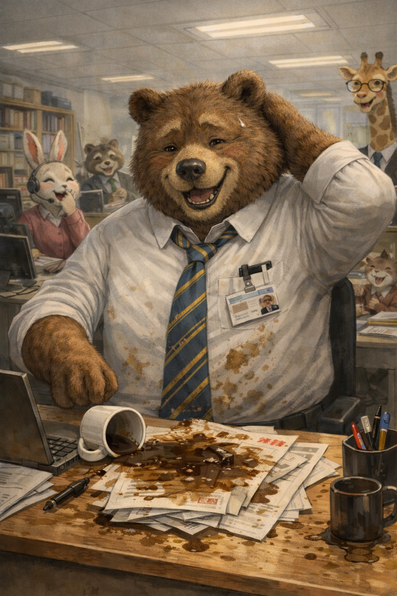

ユーモアが大切である理由
生活にユーモアを ― 心を守り、人を結ぶ力

人生には、怒りや緊張、失敗、恐れ、恥をかく出来事がつきものです。
思い通りにいかない日もあれば、気まずさに顔が熱くなる瞬間もあります。
そんなとき、私たちを守ってくれる力の一つが「ユーモア」です。
では、なぜユーモアはそれほど役に立つのでしょうか。
ユーモアは神からの贈り物
笑う能力は、人間に備えられた尊い特性です。自然界を見ても、子猫や子犬の無邪気なしぐさ、 思いがけない動きなど、思わず微笑んでしまう場面がたくさんあります。創造の中には、楽しさや軽やかさが織り込まれているのです。
ユーモアは軽薄なものではありません。
それは、私たちの心を支えるために与えられた贈り物と言えるでしょう。
ユーモアは「距離」をつくる力
怒りや恐れの中にいるとき、人は出来事に飲み込まれます。
しかし、少し笑えるとき、私たちはその出来事から一歩引くことができます。
- 失敗を「終わり」ではなく「笑い話」に変える
- 恥を「自己否定」ではなく「人間らしさ」に変える
- 緊張を「重圧」から「ほぐれ」に変える
つまり、心に“距離”をつくるのです。
この距離があるからこそ、感情に押し流されず、冷静さを取り戻せます。
怒りながら笑い続けるのは難しいものです。ユーモアは、感情の暴走を穏やかに鎮めます。
ユーモアは人間関係の最短距離
「笑いは二人の人間の最短距離」と言われます。
一緒に笑えるということは、物の見方や感性がどこか通じているということです。ユーモアはその人の価値観や想像力を映し出します。
家庭でも、職場でも、緊張した空気を和らげる一言が関係を守ることがあります。 強い言葉よりも、柔らかいユーモアの方が人の心を動かすことも少なくありません。
人を攻撃する笑いではなく、状況を軽くする笑い。
それが関係を深めるユーモアです。
ユーモアと創造性
ユーモアの本質は「意外な組み合わせ」にあります。
一見合わないものを結びつける発想が、笑いを生みます。
これは創造性と同じ構造です。
- 視点を変える力
- 固定観念を崩す力
- 新しい見方を見つける力
ユーモアのある人は、柔軟で、新しい考えを受け入れやすい傾向があります。
だからこそ、ユーモアは問題解決にも役立つのです。
しかし、分別が必要
ユーモアは力ですが、使い方を誤れば傷を生みます。
- 弱い立場の人を笑いものにする
- 人種や背景をけなす
- 悲しんでいる人に軽薄な冗談を向ける
そのような笑いは人を遠ざけます。聖書は「愛は不義を歓ばない」（コリント第一 13:6）と述べています。
ユーモアには思いやりが必要です。
人を笑うのではなく、状況を軽くする。
からかうのではなく、和らげる。
その分別があってこそ、ユーモアは祝福になります。
結び
怒りや緊張、失敗や恐れに満ちたこの世界で、ユーモアは心を守るクッションです。
それは神から与えられた軽やかな力。距離をつくり、人を結び、創造性を育み、時に健康さえ支えます。
生活の中にユーモアを取り入れましょう。
分別と愛を伴った笑いは、あなた自身を、そして周りの人々を、驚くほど穏やかに、強くしてくれるでしょう。